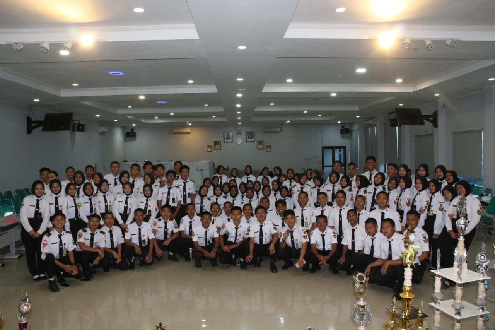
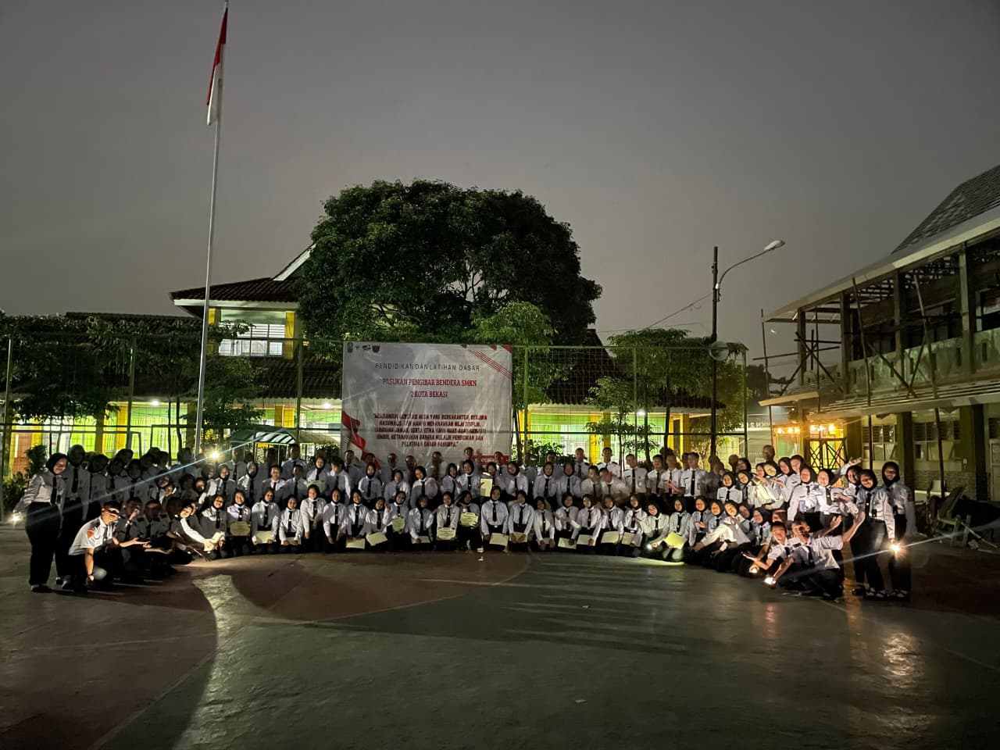

Struktur Organisasi Periode 2025/2026
Pembina

Bapak Ramli Kurniawan, S.Pd
Pelatih

Kang Langgeng Parmadi Widakdo
Ketua Umum

Kang Ahmad Darwis Al Hakim
Wakil Ketua 1

Teh D Widya Sastra Abidin
Sekretaris 1

Kang Dimas Ardiansyah
Bendahara 1

Teh Nabilah Al Fitroh
Humas 1

Teh Fianita Nanda Ary Prayitno
Wakil Ketua 2

Teh Aulia Najibah
Sekretaris 2

Teh Intan Nuraini
Bendahara 2

Kang William Dolfi Djenama
Humas 2

Kang Rayhan Randisyarif Akbar
Anggota


